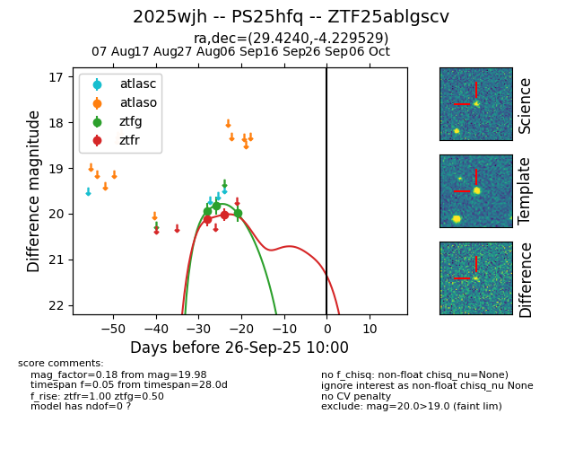
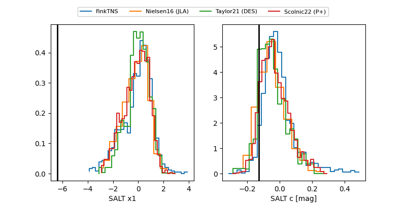

FINK: ZTF25ablgscv
Lasair: ZTF25ablgscv
ALeRCE: ZTF25ablgscv
TNS: 2025wjh
YSE: 2025wjh
ZTF25ablgscv (ztf,fink)
2025wjh (tns,yse)
PS25hfq (panstarrs)
equatorial (ra, dec) = (29.4240,-4.22953)
galactic (l, b) = (160.4544,-62.17279)


last ztfg=19.98, ztfr=20.02
3 ztfg, 2 ztfr detections